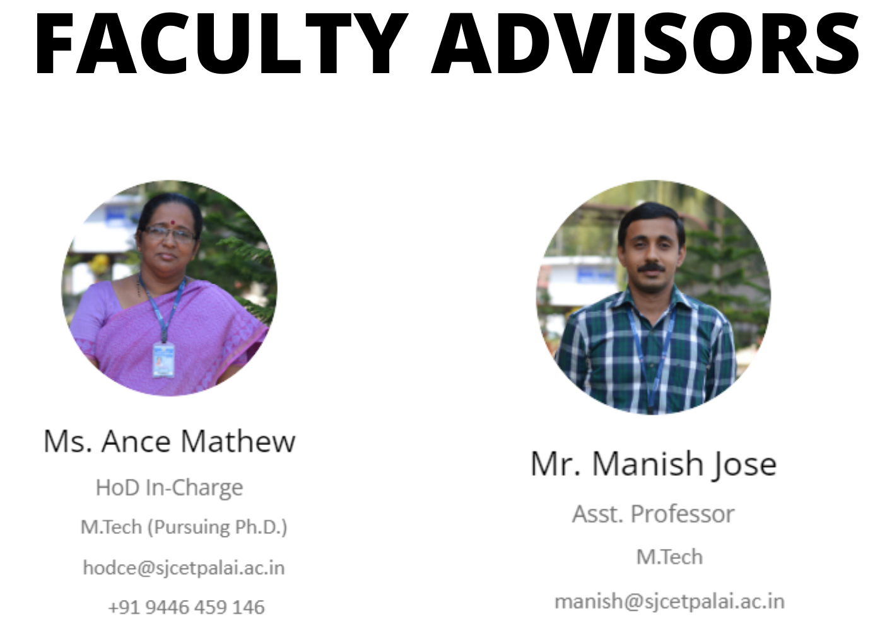
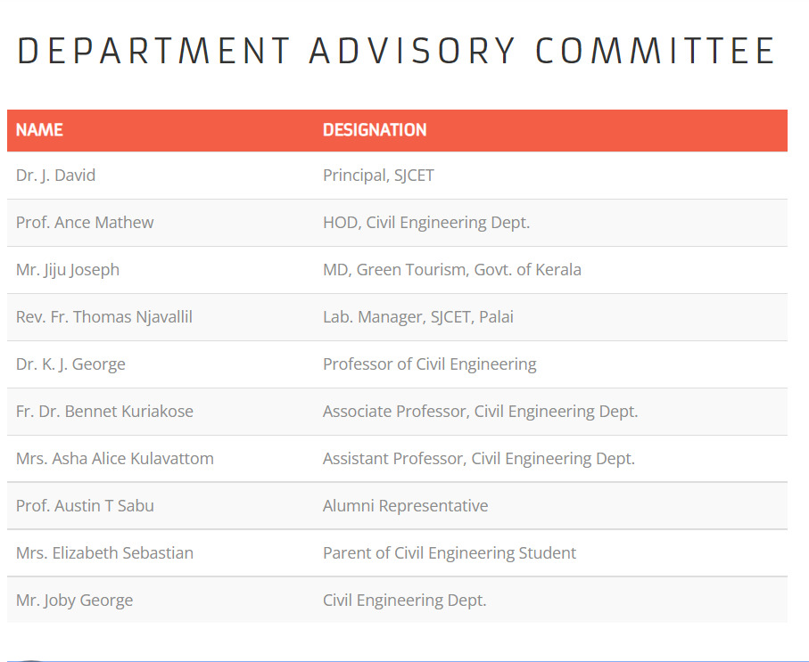

ASCE stands at the forefront of a profession that plans, designs, constructs, and operates society’s economic and social engine – the built environment – while protecting and restoring the natural environment.
Through the expertise of its active membership, ASCE is a leading provider of technical and professional conferences and continuing education, the world’s largest publisher of civil engineering content, and an authoritative source for codes and standards that protect the public.
The Society advances civil engineering technical specialties through nine dynamic institutes and leads with its many professional- and public-focused programs.
Member strength: all career stages & students; all sectors & disciplines
Local strength: 94 sections, 162 branches, 13 groups, 407 student chapters, and 119 younger member groups
Technical strength: 9 specialty institutes
.
Leave a comment